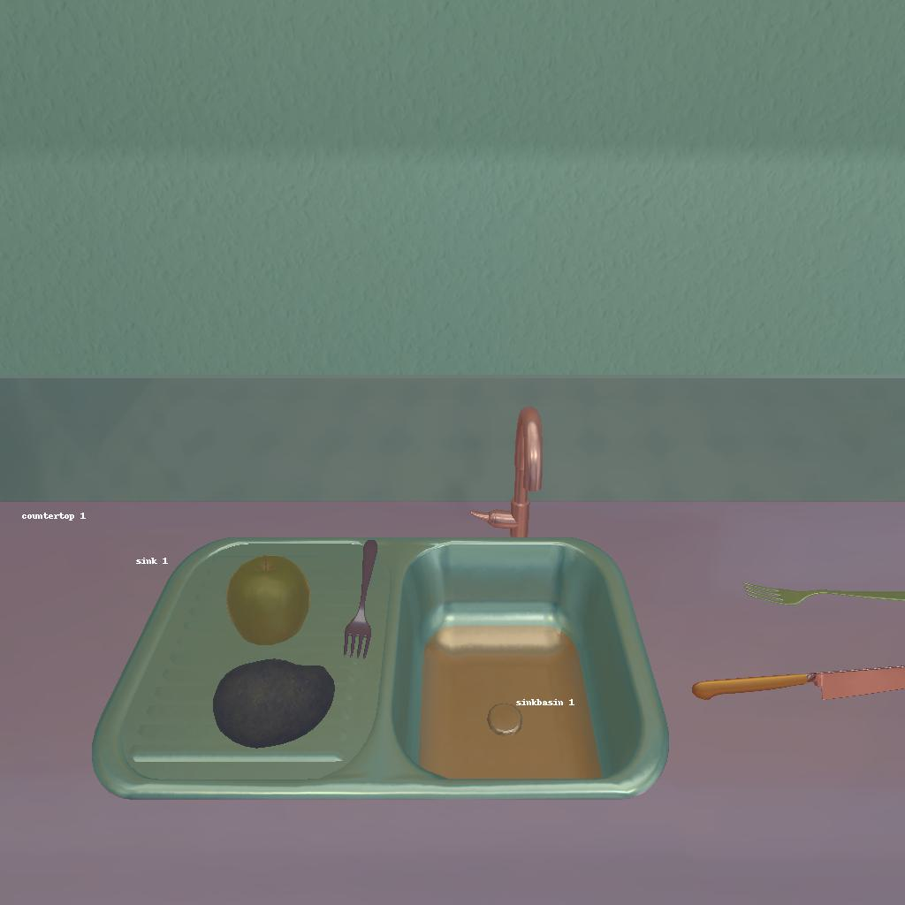
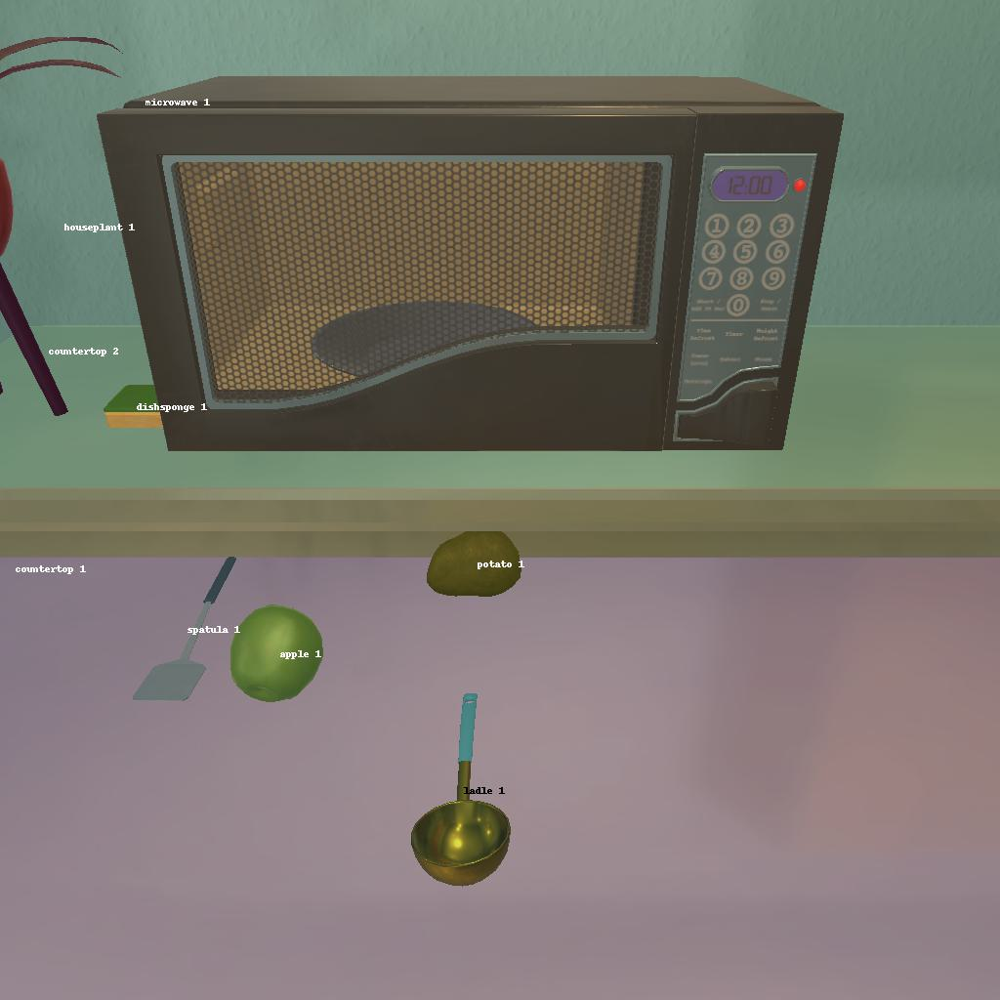

---------------------------------------------------------task: 20---------------------------------------------------------
--------------------------------------------------------------------------------------------------------------------------------------------------------------------
--------------------------------------------------------------------------------------------------------------------------------------------------------------------
Step:--------------------------------------------------------------------------1-------------------------------------------------------------------------------
----------------------------------------
VLM Prompt:
Image1:
Image2:
**Instruction**
1. Analyze the provided image to identify all visible household objects, focusing on those relevant to the task description "put a hot apple in garbagecan."
2. Use the analysis of the image and the task hint "The agent must find an object of the desired type, pick it up, go to a microwave, heat the object with the microwave, then find the correct location to place it, and put it down there. The agent does not need to use the microwave button or open the microwave to heat the object, and the agent just needs to do action that is "heat the object with the microwave"." to answer the question: what is the most reasonable action in the choices for the task description "put a hot apple in garbagecan"?
4. Decide and write the answer using the template: The answer is: (i): , where i is the real number. If there is no desired object in the image, search every place based on **Initial Observation** to find the object. And if no one is exactly correct, choose a similar answer.
**Initial Observation**
You are in the middle of a room. Looking quickly around you, you can see cabinet (1-18), countertop (1-4), sink (1), drawer (1-7), sinkbasin (1), coffeemachine (1), microwave (1), garbagecan (1), stoveburner (1-4), toaster (1), fridge (1)
**Answer Choices**
(1): go to cabinet 1
(2): go to cabinet 2
(3): go to countertop 1
(4): go to cabinet 3
(5): go to cabinet 4
(6): go to cabinet 5
(7): go to sink 1
(8): go to cabinet 6
(9): go to drawer 1
(10): go to drawer 2
(11): go to sinkbasin 1
(12): go to cabinet 7
(13): go to cabinet 8
(14): go to coffeemachine 1
(15): go to cabinet 9
(16): go to countertop 2
(17): go to cabinet 10
(18): go to drawer 3
(19): go to drawer 4
(20): go to garbagecan 1
(21): go to drawer 5
(22): go to cabinet 11
(23): go to cabinet 12
(24): go to cabinet 13
(25): go to cabinet 14
(26): go to stoveburner 1
(27): go to countertop 3
(28): go to stoveburner 2
(29): go to stoveburner 3
(30): go to stoveburner 4
(31): go to drawer 6
(32): go to cabinet 15
(33): go to cabinet 16
(34): go to cabinet 17
(35): go to cabinet 18
(36): go to toaster 1
(37): go to drawer 7
(38): go to countertop 4
(39): go to fridge 1
(40): open microwave 1
(41): close microwave 1
(42): examine microwave 1
**Answer**
Let's think step by step by following the instructions.
----------------------------------------
----------------------------------------
Original Response:
First, we need to identify all visible household objects relevant to the task "put a hot apple in garbagecan." In Image1, we can see a countertop and a sink with a basin. In Image2, we see a microwave, a countertop with a potato, an apple, a spatula, and a ladle.
Based on the task description and hint, the agent must find an apple, which we can see on countertop 2 in Image2. The agent then needs to heat the apple with the microwave, which is also visible in Image2. Once the apple is hot, the agent must find the garbagecan to dispose of it. The garbagecan is not visible in the images, but it's mentioned in the Initial Observation.
Considering the above analysis and the fact that the apple and microwave are already identified, the most reasonable next action is to heat the apple with the microwave. However, since the choices do not include actions like "pick up the apple" or "heat the apple with the microwave," we need to choose an action that would imply interacting with the microwave.
The closest action from the choices that suggests using the microwave would be to open it, even though the hint mentions the agent does not need to use the microwave button or open the microwave. Since we are restricted by the provided choices and the task requires using the microwave to heat the apple, we'll choose the action that involves the microwave.
The answer is: (40): open microwave 1.
----------------------------------------
----------------------------------------
>>> Refine Original VLM Response and Get Pure Action: open microwave 1
----------------------------------------
-----------------------------------------------------------------
Running time: 19.836977243423462 seconds
Total Money: 9.563420000000006
-----------------------------------------------------------------
-----------------------------------------------------------------
Text Observation:You open the microwave 1. The microwave 1 is open. In it, you see a ladle 1, a apple 1, a potato 1, a spatula 1, and a houseplant 1.
-----------------------------------------------------------------
UNSUCCEED